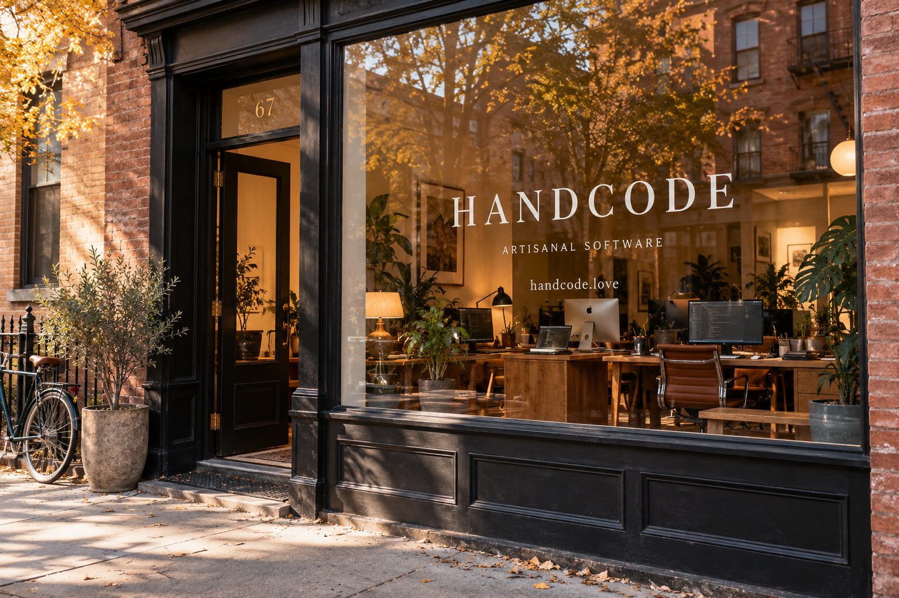

Source
Established languages, maintained by people who still answer email.
PROVENANCE BEFORE PREFERENCEIndependent minds. Considered work.
Bespoke applications, thoughtfully architected and written by hand in our Brooklyn studio.
Small batches. Considered dependencies.
Spring commissions now being considered.
We do not use AI. We also do not use the word ‘leverage.’
01 / The practice
A small, independent software consultancy. We build web applications, internal tools, and systems that deserve a little more consideration.
Established languages, maintained by people who still answer email.
PROVENANCE BEFORE PREFERENCEEvery line written by a person. Every decision discussed by several. No agents were consulted, including the ones that offered.
HUMAN-WRITTEN. PEER-REVIEWED.Reviewed, refined, and reluctantly declared finished.
NOTHING LEAVES UNCONSIDERED02 / Spring commissions
Currently accepting commissions for systems that will not need to be rewritten next quarter.
From the workshop
We reserve the right to decline projects that appear to want a chatbot.
03 / Our people
Engineers, designers, and a founding partner who prefers the word practitioner.
And, in most cases, why. Each build has a dedicated team, a second pair of eyes, and someone who remembers the original conversation.
Interfaces considered down to the last detail. The space between these sentences was discussed on Thursday.
We keep the studio small enough to know every project. Large enough for a disagreement about tabs.
04 / Williamsburg, Brooklyn
Open studio visits by appointment.
Please do not arrive with a laptop open.
Please do not tap on the glass.
Our engineers are holding context.

A smaller, more considered internet.
We reply personally. This may take a person some time.